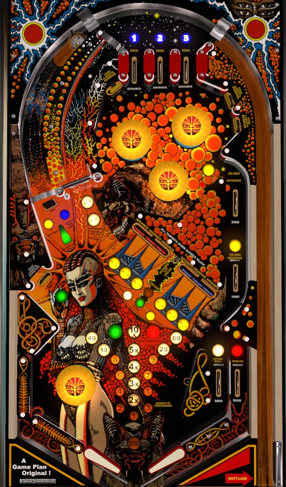

Try to always be in multiball. At any time during single ball play, shoot the drop target in front of the left orbit to light a lock, then shoot the orbit itself to lock a ball. To release the locked ball and start 2-ball multiball, shoot the lower left standup target. In multiball, all scores are doubled. Use multiball to clear the drop targets in the front right of the game with the safety net of a second ball to build the spinner value, then shoot the lit spinner with double scoring active for massive points of up to 8,000 per spin.
The below picture of Andromeda's playfield was taken from the VPX recreation by JPSalas.
Top lanes score 3,000 points and a bonus advance. Roll through an unlit lane to light it. Light all 3 lanes to advance the bonus multiplier in the sequence 2x-3x-4x-5x-10x. Flipper lane change is available with the right flipper only.
Each standup target in the bumper area scores 1,000 points and lights one of the three bumpers. Bumpers score 100 points, or 1,000 when lit. When exactly 1 or 2 bumpers are lit, each bumper hit will rotate which bumper(s) are lit.
In the center-right of the table are 6 drop targets, in two banks of three. Each drop target down in either bank scores 3,000 points and a bonus advance.
Completing the left (red) 3-bank lights the upper part of the right side lane for 20,000 points and 3 bonus advances instead of 3,000 points.
Completing the right (blue) 3-bank lights the lower part of the right side lane for 20,000 points and 3 bonus advances instead of 3,000 points.
Completing both banks once scores 50,000 points and increases the spinner value from 100 points per spin to 1,000 per spin.
Completing both banks twice scores 50,000 points, increases the spinner value to 3,000 per spin, and lights the right in lane for extra ball.
Completing both banks 3 times scores 50,000 points, maxes out the spinner value at 4,000 per spin, and lights the right out lane for special.
Completing both banks 4 or more times scores 50,000 points and an instant special.
In between the two 3-banks of drop targets is a secret lane that goes underneath one of the playfield plastics. The value of this lane constantly flickers between 25,000, 50,000, 75,000, and 100,000 points. Making the lane scores the currently lit value. Be aware that any ball coming down the secret lane is very liable to plop directly between the flippers. This lane is small and dangerous enough to shoot at that it is not part of the game's strategy.
On Andromeda, you are never more than 3 shots away from multiball: shoot the drop target in front of the left orbit lane, then shoot the left orbit lane itself to lock a ball, then shoot the lower left standup target to release the lock for 2-ball play. Lock stealing is available in a multiplayer game. After multiball has been played and single ball play resumes, the drop target does not re-raise, so you are only two shots from additional multiballs during the same ball-in-play.
The drop target in front of the left orbit scores 5,000 points and a secondary award. Each time it is hit, the secondary award alternates between 3 bonus advances or spotting one top lane. If there is not a ball in the lock, the drop target will stay down when it is hit, opening the way to the lock saucer at the end of its lane. If there is a ball in the lock, the drop target will always re-raise immediately, blocking off the lock lane.
During multiball, all playfield scores are doubled, but there are no other multiball-specific scoring features. Use multiball as a time to clear 3-banks of drop targets with the safety net of a second ball in play. Once the spinner value is advanced to 3,000 per spin or more, focus on just shooting the spinner, whose value is increased to 6,000 or 8,000 per spin with double scoring active.
The right side of the table bottom is conventional; the in lane scores 3,000 points and can be lit for extra ball through drop target completions, and the out lane scores 5,000 points and can be lit for special also through drop target completions. On the left, there is no in or out lane, just a pop bumper that causes chaos. If the ball is being "juggled" by the pop bumper, hold up the left flipper to reduce the possibility of the ball being spiked down the center drain. When shooting for the lock release target in the lower left from the right flipper, take care not to flip too late and fire the ball directly at the pop bumper. The bumper scores 100 points or 1,000 when lit, and is lit by hitting the lower left standup target.
Bonus is advanced 1 time by any top lane or any drop target in either 3-bank. Bonus is advanced 3 times by lit rollover switches in the upper right side lane or the left orbit drop target when lit. Base bonus maxes out at 100,000 points and always carries over from ball to ball. Bonus multiplier, which is advanced in the sequence 2x-3x-4x-5x-10x with each completion of the top lanes, is never carried over from ball to ball. Max bonus is 10x 100,000 = 1,000,000 points. There is no mid-ball bonus collect.
In competition/novelty play, specials and extra balls score 50,000 points. A game setting can limit each player to 1 or 2 specials earned per game. I believe there is a maximum of one extra ball per ball in play.